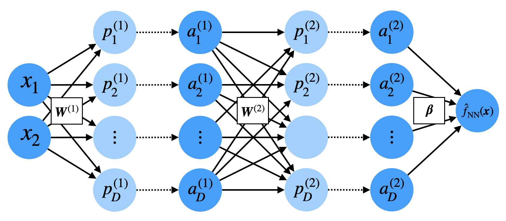
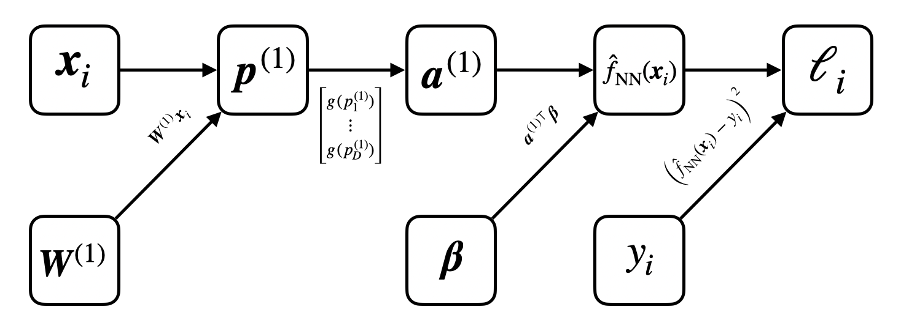
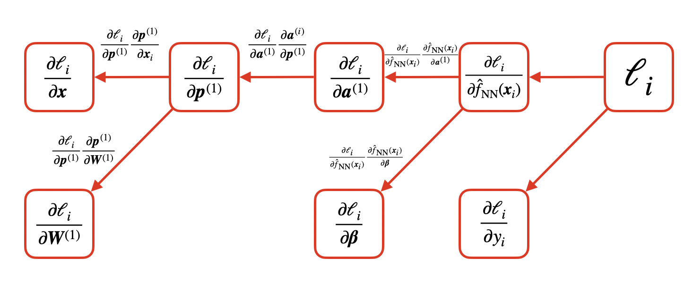
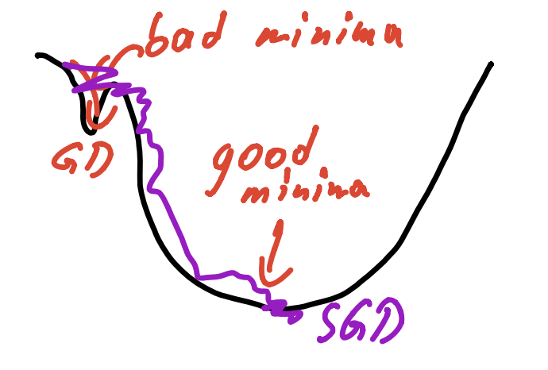
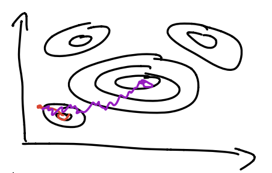

Stat 406
Geoff Pleiss, Trevor Campbell
Last modified – 13 November 2024
\[ \DeclareMathOperator*{\argmin}{argmin} \DeclareMathOperator*{\argmax}{argmax} \DeclareMathOperator*{\minimize}{minimize} \DeclareMathOperator*{\maximize}{maximize} \DeclareMathOperator*{\find}{find} \DeclareMathOperator{\st}{subject\,\,to} \newcommand{\E}{E} \newcommand{\Expect}[1]{\E\left[ #1 \right]} \newcommand{\Var}[1]{\mathrm{Var}\left[ #1 \right]} \newcommand{\Cov}[2]{\mathrm{Cov}\left[#1,\ #2\right]} \newcommand{\given}{\ \vert\ } \newcommand{\X}{\mathbf{X}} \newcommand{\x}{\mathbf{x}} \newcommand{\y}{\mathbf{y}} \newcommand{\P}{\mathcal{P}} \newcommand{\R}{\mathbb{R}} \newcommand{\norm}[1]{\left\lVert #1 \right\rVert} \newcommand{\snorm}[1]{\lVert #1 \rVert} \newcommand{\tr}[1]{\mbox{tr}(#1)} \newcommand{\brt}{\widehat{\beta}^R_{s}} \newcommand{\brl}{\widehat{\beta}^R_{\lambda}} \newcommand{\bls}{\widehat{\beta}_{ols}} \newcommand{\blt}{\widehat{\beta}^L_{s}} \newcommand{\bll}{\widehat{\beta}^L_{\lambda}} \newcommand{\U}{\mathbf{U}} \newcommand{\D}{\mathbf{D}} \newcommand{\V}{\mathbf{V}} \]
\[ \begin{aligned} &\boldsymbol a^{(0)} = \boldsymbol x \\ &\text{For } t \in 1 \ldots L:\\ &\qquad \boldsymbol p^{(t)} = \boldsymbol W^{(t)} a^{(t-1)} \\ &\qquad \boldsymbol a^{(t)} = \begin{bmatrix} g(p^{(t)}_1) & \ldots & g(p^{(t)}_D) \end{bmatrix}^\top \\ &\hat f_\mathrm{NN}(x) = \boldsymbol \beta^\top \boldsymbol a^{(L)} \end{aligned} \]
Weights ( \(\boldsymbol \beta \in \R^{K_T}, \boldsymbol{W}^{(t)} \in \R^{D \times D}\) )
Preactivations ( \(\boldsymbol p^{(t)} \in \R^D\) )
(Hidden) activations ( \(\boldsymbol a^{(t)} \in \R^D\) )

Choose the architecture:
How many layers, units per layer, activation function \(g\)?
Choose the loss function: Measures “goodness” of NN predictions
Regression: \(\ell(\hat f_\mathrm{NN}(x_i), y_i) = \frac{1}{2}(y_i - \hat f_\mathrm{NN}(x_i))^2\)
(the 1/2 just makes the derivative nice)
Classification : \(\ell(\hat f_\mathrm{NN}(x_i), y_i) = \log\left( 1 + \exp\left( (1 - y_i) \hat f_\mathrm{NN}(x_i) \right) \right)\)
Choose paramteters \(\boldsymbol W^{(t)}\), \(\beta\) to minimize the loss over training data
\[ \text{Goal:} \quad \argmin_{w_{\ell,k}^{(t)}, \beta_{m,\ell}} \sum_{i=1}^n \underbrace{\ell(\hat f_\mathrm{NN}(x_i), y_i)}_{\ell_i} \]
SGD update rule: for a random subset \(\mathcal M \subset \{1, \ldots, n \}\)
\[ \begin{align} \boldsymbol W^{(t)} &\leftarrow \boldsymbol W^{(t)} - \gamma \: \frac{n}{\left| \mathcal M \right|} \sum_{i \in \mathcal M} \frac{\partial \ell_i}{\partial \boldsymbol W^{(t)}} \\ \beta &\leftarrow \beta - \gamma \: \frac{n}{\left| \mathcal M \right|} \sum_{i \in \mathcal M} \frac{\partial \ell_i}{\partial \boldsymbol \beta} \end{align} \]
Recall that \(\frac{\partial }{\partial \boldsymbol W^{(t)}}\sum_{i=1}^n \ell_i \approx \frac{N}{\left| \mathcal M \right|} \sum_{i \in \mathcal M} \frac{\partial \ell_i}{\partial \boldsymbol W^{(t)}}\)
\[ \text{Goal:} \quad \argmin_{w_{\ell,k}^{(t)}, \beta_{m,\ell}} \sum_{i=1}^n \underbrace{\ell(\hat f_\mathrm{NN}(x_i), y_i)}_{\ell_i} \]
\[ \text{Need:} \qquad \frac{\partial \ell_i}{\partial \boldsymbol \beta}, \quad \frac{\partial \ell_i}{\partial \boldsymbol W^{(t)}} \]
Solution: Compute \(\frac{\partial \ell_i}{\partial \boldsymbol \beta}\) and \(\frac{\partial \ell_i}{\partial \boldsymbol W^{(t)}}\) via the chain rule
In NN parlance, “chain rule” = “backpropagation”
Consider the computation graph corresponding to the 1-hidden layer NN
\[ \begin{aligned} \boldsymbol p^{(1)} = \boldsymbol W^{(1)} \boldsymbol x, \qquad \boldsymbol a^{(1)} = \begin{bmatrix} g(p^{(1)}_1) & \ldots & g(p^{(1)}_D) \end{bmatrix}^\top, \qquad f_\mathrm{NN}(x) = \boldsymbol \beta^\top \boldsymbol a^{(1)} \end{aligned} \]
Each node in the computation graph is computed from a simple and differentiable function.
So we can compute \(\partial \ell_i / \partial \boldsymbol \beta\) through recursive application of the chain rule.
\[ \begin{aligned} \partial \ell_i / \partial \boldsymbol W^{(1)} &= \underbrace{\left( \partial \ell_i / \partial \boldsymbol p^{(1)} \right)}_{\text{compute recursively}} \underbrace{\Bigl( \partial \overbrace{\boldsymbol W^{(1)} \boldsymbol x}^{\boldsymbol p^{(1)}} / \partial \boldsymbol W^{(1)} \Bigr)^\top}_{\text{easy!}} \\ \partial \ell_i / \partial p^{(1)}_j &= \underbrace{\left( \partial \ell_i / \partial a^{(1)}_j \right)}_{\text{compute recursively}} \underbrace{\Bigl( \partial \overbrace{\boldsymbol g(p^{(1)}_j)}^{a_j^{(1)}} / \partial p_j^{(1)} \Bigr)^\top}_{\text{easy!}} \\ &\vdots \end{aligned} \]
Applying these rules recursively, we end up with the reverse computation graph

If this process looks automatable, it is!
Modern autodifferentiation frameworks automatically perform these recursive gradients computations for any function that can be written as a computation graph (i.e. the composition of simple differentiable primative functions).
We do not need to compute \(\partial \ell_i / \partial \boldsymbol x\) in order to perform gradient descent. Why? Can you generalize this rule?
However, we do need to compute \(\partial \ell_i / \partial \boldsymbol a^{(1)}\). Why? Can you generalize this rule?
NN parameters solve the optimization problem
\[ \argmin_{\boldsymbol W^{(t)}, \boldsymbol \beta} \sum_{i=1}^n \ell( \hat f_\mathrm{NN}(\boldsymbol x_i), y_i) \]
We solve the optimization problem with stochastic gradient descent
\[
\begin{align}
\boldsymbol W^{(t)} \leftarrow \boldsymbol W^{(t)} - \gamma \: \frac{n}{\left| \mathcal M \right|} \sum_{i \in \mathcal M} \frac{\partial \ell_i}{\partial \boldsymbol W^{(t)}}, \qquad
\beta \leftarrow \beta - \gamma \: \frac{n}{\left| \mathcal M \right|} \sum_{i \in \mathcal M} \frac{\partial \ell_i}{\partial \boldsymbol \beta}
\end{align}
\]
We compute the gradients \(\frac{\partial \ell_i}{\partial \boldsymbol \beta}\) and \(\frac{\partial \ell_i}{\partial \boldsymbol W^{(t)}}\) using the chain rule (i.e. backpropagation)
Procedure (intuitivly): reformulate \(\hat f_\mathrm{NN}(\boldsymbol x_i)\) as a computation graph, and then “reverse” the computation graph.
Modern NN libraries perform this automatically.
(and why they’re not actually challenges)
Computing \(\sum_{i=1}^n \partial \ell_i / \partial \boldsymbol W^{(t)}\) requires a lot of computation!
\(\ell_i\) is a non-convex function of \(\boldsymbol W^{(t)}\) and \(\boldsymbol \beta\)!
[Extra credit: convince yourself that this is true for any neural network with any activation function.]
Gradient descent might get stuck in sub-optimal local minima!
Gradient descent might be unstable / sensitive to initial conditions.
*It doesn’t solve the problem of choosing the step size. That remains a dark art.
We have already seen how SGD can reduce the computational burden of gradient descent by approximating \(\sum_{i=1}^n \partial \ell_i / \partial \boldsymbol W^{(t)}\) with the randomized partial sum \(\frac{n}{|\mathcal M|} \sum_{i \in \mathcal M} \partial \ell_i / \partial \boldsymbol W^{(t)}\)
I claim that SGD also helps (but doesn’t guarantee) convergence to “good” minima.
I can’t theoretically prove this to be true. No one can. (Though some statisticians have made progress.)
Empirically, SGD-trained NN outperforms non-stochasticly trained NN.
I can offer some hand-wavy intuition…
The stochastisity (noise) in SGD turns out to be a feature, not a bug.
Consider the loss as a function of \(w^{(i)}_{ij}\)
Imagine the loss (as a function of \(w^{(i)}_{ij}\)) has a “narrow” minimum and a “wide” minimum
The steps made by SGD are too imprecise to converge to the “narrow” minimum.
A more precise optimization method, like non-stochastic gradient descent, would have no problem converging to these.
The “wider” minima that SGD converges to usually yield better predictors.
Intuitively, a “wide” minimum means that the loss is robust to small perturbations in \(w^{(i)}_{ij}\). A robust set of parameters is likely less dependent on any one training set.


Don’t initialize the neural network parameters to be \(0\).
In general, initialize the parameters to be i.i.d. Gaussian with a reasonable stddev. Deep learning libraries do this automatically.
Scale input features to be zero mean and unit variance
Use small minibatches.
Small minibatches = noisier (higher variance) gradients = convergence to “better” minima
Reduce step size during optimization.
Use a slightly fancier optimization algorithm than SGD:
Why do NN work so well?
UBC Stat 406 - 2024